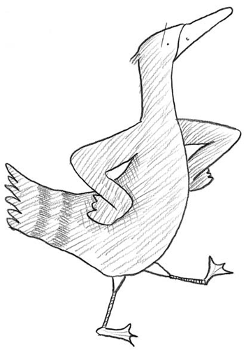

Patito, patito color de café
¿Por qué estás tan triste?
Quisiera saber.
Perdí a mi patita
mi amor y mi bien
por eso estoy triste
y triste estaré.
Tu pata yo ví.
¡En dónde por Dios!
Sentada en un lago
no lejos de aquí.
Corriendo allá voy
pues quiero saber
por qué mi patita
de mí se alejó.
Hallé a mi patita
mi amor y mi bien
con siete patitos
color de café.